STŘEP KITSUNE · OFFLINE
Konec: Vypnut
„Špatně,“ zasyčí liška. Tvůj chrom ji začne poslouchat víc než tebe.
Implantáty se hlásí jeden po druhém: optika offline, port offline, reflexy offline. Svět ztmavne, ruce ztuhnou.
Poslední se vypne srdeční stimulátor, který ti kdysi voperoval ripperdoc. Netrunnerka ti ještě mačká hrudník, ale tělo bez chromu už zapomnělo, jak žít.
